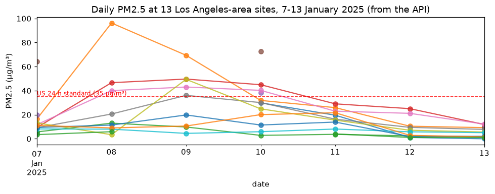

Notebook 08_04 put data inside web pages. That works for one map and one reader, but not for an organisation that publishes data many people and programs use. They need a service: an address on the web that answers requests for map tiles or features, so a browser, QGIS, ArcGIS, a Python script or another server can each ask for just the part they need. This notebook builds and tests such services with geolattice.web:
raster tiles, pre-rendered (static) and rendered on request (dynamic), from local files and from a Sentinel-2 Cloud-Optimized GeoTIFF on AWS;
an OGC API: Features service for Bangladesh boundaries, arsenic samples and California PM2.5 measurements, read back by GDAL, GeoPandas and OWSLib;
PMTiles vector tiles served as one static file, shown with MapLibre.
Everything runs inside this notebook on 127.0.0.1; Notebook 08_10 covers deployment.
Learning objectives
Name the main map-service standards (WMS, WMTS, XYZ/TMS, TileJSON, OGC API: Features, Tiles and Maps, vector tiles, PMTiles) and what each one delivers.
Decide between static and dynamic tiles from storage, latency and data-transfer numbers.
Serve raster tiles and an OGC API: Features service with geolattice.web.create_app, and run it in the background with start_server.
Query features with paging, bounding boxes, attribute filters and time (datetime).
Consume the service from GDAL, GeoPandas, OWSLib and a web map, as other users would.
Publish vector tiles as a single PMTiles file and display them with MapLibre.
Data
Data
Source
Sentinel-2 NDVI and band stacks over Syracuse, NY (July 2025)
Union boundaries of Bangladesh (5,160) and arsenic at 263 rice fields
Data/00_shared/vector_data/Bangladesh/
Daily PM2.5 at 163 California monitoring sites, 2025 (59,566 rows)
Data/00_shared/data_spatial_stat/CA_pm25_2025.csv
New York counties
Data/00_shared/vector_data/USA/NY_County_GCS.shp
Run Notebooks 08_01 and 08_03 first. The extra clients are installed with pip install owslib pmtiles httpx.
Contents
Setup
Map-service standards
Static tiles: pre-rendered pyramids
Dynamic tiles: rendering on request
An OGC API: Features service
Using the service from GDAL, GeoPandas and OWSLib
One server, many requests
Vector tiles as one file: PMTiles
From a notebook to production
Summary and exercises
Setup
Installation. This notebook needs installation option 6 (every GeoLattice module): pip install "geolattice[all]". See “Installation options” in the GeoLattice README. It also uses owslib, pmtiles, which no GeoLattice option installs: pip install owslib pmtiles.
Code
# Setup: imports, paths, HTTP helper, and web_ready geometry simplifier%matplotlib inlineimport jsonimport shutilimport threadingimport timeimport warningsfrom pathlib import Pathwarnings.filterwarnings("ignore")import numpy as npimport pandas as pdimport geopandas as gpdimport shapelyimport httpximport matplotlib.pyplot as pltfrom IPython.display import IFrame, displayfrom osgeo import gdal, ogrfrom owslib.ogcapi.features import Featuresimport pmtiles.reader as pmrimport geolatticeimport geolattice.web as webfrom geolattice.vector import write_pmtilesgdal.UseExceptions()plt.rcParams.update({"figure.dpi": 110})DATA = Path("../../../Data")BD = DATA /"00_shared"/"vector_data"/"Bangladesh"WEB = DATA /"00_shared"/"data_web_cloud_gis"OUT = WEB /"08_05_outputs"if OUT.exists(): shutil.rmtree(OUT)OUT.mkdir(parents=True)for needed in [WEB /"08_03_outputs"/"districts.gpkg", WEB /"08_01_outputs"/"ndvi_syracuse_20250723.tif", WEB /"08_01_outputs"/"stack_deflate_2.tif"]:ifnot needed.exists():raiseFileNotFoundError(f"{needed} is missing: run Notebooks 08_01 and 08_03 first")http = httpx.Client(timeout=300)def get(url, show=True, **params):"GET a URL; print status, type and size; return the response." t0 = time.perf_counter() r = http.get(url, params=params orNone)if show:print(f"{r.status_code}{r.headers.get('content-type', '-'):38s}{len(r.content):>11,} bytes "f"{(time.perf_counter() - t0) *1000:7.0f} ms {r.url.path}{'?'+ r.url.query.decode() if r.url.query else''}")return rdef web_ready(gdf, tolerance=250, digits=5):"Coverage-simplify in UTM 46N and round coordinates (Notebook 08_04)." g = gdf.to_crs(32646) s = gpd.GeoSeries(shapely.coverage_simplify(g.geometry.values, tolerance), crs=32646).to_crs(4326)return gpd.GeoDataFrame(gdf.drop(columns="geometry"), geometry=shapely.set_precision(s.values, 10.0**-digits), crs=4326)print("geolattice", geolattice.__version__, "| GDAL", gdal.__version__, "| outputs:", OUT)
The OGC API family replaces the XML-based W*S services with resource URLs, JSON and an OpenAPI description, the same style as any modern web API.
Tiles can be static (rendered once, stored as files, served by any web server or a CDN) or dynamic (rendered from the source data when requested). geolattice.web does both: make_xyz_tiles writes static pyramids, and create_app builds a server for dynamic tiles and OGC API: Features (Starlette, run with uvicorn).
Static tiles: pre-rendered pyramids
Each zoom level has four times as many tiles as the one before. Before deciding to pre-render, count the tiles an area needs:
Code
# Count XYZ tiles needed for Syracuse NDVI vs all of Bangladesh across zoomsdef tile_count(bounds, z): west, south, east, north = bounds a, b = web.lonlat_to_tile(west, north, z), web.lonlat_to_tile(east, south, z)return (b.x - a.x +1) * (b.y - a.y +1)ndvi_path = WEB /"08_01_outputs"/"ndvi_syracuse_20250723.tif"syracuse = web.raster_web_info(ndvi_path)["bounds"]bangladesh = (88.0, 20.6, 92.7, 26.7)counts = pd.DataFrame({"zoom": range(6, 19)})counts["m per pixel (24°N)"] = [round(web.tile_resolution(z, latitude=24), 1) for z in counts.zoom]counts["Syracuse NDVI tiles"] = [tile_count(syracuse, z) for z in counts.zoom]counts["Bangladesh tiles"] = [tile_count(bangladesh, z) for z in counts.zoom]counts["Bangladesh, cumulative"] = counts["Bangladesh tiles"].cumsum()counts.set_index("zoom").T
zoom
6
7
8
9
10
11
12
13
14
15
16
17
18
m per pixel (24°N)
2234.5
1117.3
558.6
279.3
139.7
69.8
34.9
17.5
8.7
4.4
2.2
1.1
0.5
Syracuse NDVI tiles
1.0
2.0
2.0
2.0
2.0
4.0
9.0
25.0
81.0
289.0
1088.0
4284.0
16740.0
Bangladesh tiles
4.0
6.0
24.0
77.0
280.0
1092.0
4158.0
16416.0
65360.0
260832.0
1040398.0
4157451.0
16616672.0
Bangladesh, cumulative
4.0
10.0
34.0
111.0
391.0
1483.0
5641.0
22057.0
87417.0
348249.0
1388647.0
5546098.0
22162770.0
Code
# Build a static NDVI XYZ pyramid (zooms 9-14) with a simple HTML viewert0 = time.perf_counter()pyramid = web.make_xyz_tiles(ndvi_path, OUT /"ndvi_tiles", zooms=range(9, 15), colormap="RdYlGn", rescale=(-0.1, 0.9), viewer=True, name="NDVI 23 July 2025")seconds = time.perf_counter() - t0files =list((OUT /"ndvi_tiles").rglob("*.png"))mean_kb = np.mean([f.stat().st_size for f in files]) /1e3print(f"{pyramid['tiles']} tiles ({pyramid['empty']} empty skipped) at zooms 9-14 in {seconds:.1f} s, "f"{seconds / pyramid['tiles'] *1000:.0f} ms per tile; mean tile {mean_kb:.0f} kB")print(json.dumps(pyramid["tilejson"], indent=1)[:600])
117 tiles (6 empty skipped) at zooms 9-14 in 2.6 s, 23 ms per tile; mean tile 95 kB
{
"tilejson": "3.0.0",
"name": "NDVI 23 July 2025",
"tiles": [
"{z}/{x}/{y}.png"
],
"scheme": "xyz",
"minzoom": 9,
"maxzoom": 14,
"bounds": [
-76.2224674,
42.9781455,
-76.0379568,
43.1018497
],
"center": [
-76.130212109571,
43.03999761700632,
9
]
}
Rendering the Syracuse NDVI at zooms 9-14 made 117 tiles in 2.6 s (23 ms per tile, 95 kB on average). For a city-sized raster that is trivial. For Bangladesh the count explodes: 87,417 tiles up to zoom 14, 1.39 million up to zoom 16 and 22.2 million up to zoom 18. At the same 23 ms and 95 kB per tile, the full pyramid to zoom 18 would take about six days of rendering and 2.1 TB of storage, much of it for tiles nobody ever views (the bounding box also covers sea and India). Pre-rendering suits small areas, limited zooms, or the zoom levels everyone sees; deeper zooms are rendered on demand.
A pyramid is a folder of files, so any static web server can publish it. web.static_server serves it here, with HTTP range support and counters; in production the same folder goes to object storage (S3, Azure Blob, Google Cloud Storage) behind a CDN, or to GitHub Pages.
Code
# Serve prebuilt tiles, time zoom-14 requests, and open the viewerstatic = web.static_server(OUT)center = web.raster_web_info(ndvi_path)["center"]tiles14 = [t for t in web.tiles_for_bounds(*syracuse, 14) if (OUT /"ndvi_tiles"/str(t.z) /str(t.x) /f"{t.y}.png").exists()][:30]static_ms = []for t in tiles14: t0 = time.perf_counter() r = http.get(f"{static.url}/ndvi_tiles/{t.z}/{t.x}/{t.y}.png") static_ms.append((time.perf_counter() - t0) *1000)print(f"static tiles: {len(static_ms)} requests, median {np.median(static_ms):.1f} ms, max {max(static_ms):.1f} ms")get(f"{static.url}/ndvi_tiles/tilejson.json")display(IFrame(f"{static.url}/ndvi_tiles/index.html", width="100%", height=420))
static tiles: 30 requests, median 3.0 ms, max 6.1 ms
200 application/json 302 bytes 3 ms /ndvi_tiles/tilejson.json
The pyramid folder also holds index.html, a Leaflet viewer written by make_xyz_tiles, and tilejson.json, which tells clients the URL template, bounds and zoom range.
Dynamic tiles: rendering on request
A dynamic tile server keeps only the source raster and renders each tile when it is asked for: it reads the pixels under the tile, warps them to Web Mercator, applies a colour map and encodes a PNG. create_app builds such a server. start_server runs it in the background, so the notebook can keep working while it serves (on a real server you would use web.serve(app) or uvicorn).
Code
# Start a dynamic tile server and compare latency to static PNG tilestile_app = web.create_app(rasters={"ndvi": {"path": ndvi_path, "colormap": "RdYlGn", "rescale": (-0.1, 0.9)}}, title="Syracuse NDVI")tile_server = web.start_server(tile_app)print(tile_server)for path in ["/tiles", "/tiles/ndvi/tilejson.json"]: get(tile_server.url + path)dynamic_ms = []for t in tiles14: t0 = time.perf_counter() r = http.get(f"{tile_server.url}/tiles/ndvi/{t.z}/{t.x}/{t.y}.png") dynamic_ms.append((time.perf_counter() - t0) *1000)print(f"dynamic tiles: {len(dynamic_ms)} requests, median {np.median(dynamic_ms):.1f} ms, max {max(dynamic_ms):.1f} ms;"f" Cache-Control: {r.headers['cache-control']}")empty = get(f"{tile_server.url}/tiles/ndvi/14/0/0.png")
BackgroundServer(http://127.0.0.1:34797)
200 application/json 228 bytes 2 ms /tiles
200 application/json 241 bytes 1 ms /tiles/ndvi/tilejson.json
dynamic tiles: 30 requests, median 33.6 ms, max 84.0 ms; Cache-Control: public, max-age=3600
204 - 0 bytes 2 ms /tiles/ndvi/14/0/0.png
Static tiles came back in a median 3.0 ms: the server only reads a file. The dynamic server needed a median 34 ms per tile to read, warp, colour and encode it, about ten times longer, but it stores nothing beyond the 8.6 MB source raster. A tile outside the raster returns 204 No Content, which map libraries treat as an empty tile, and every tile carries Cache-Control: public, max-age=3600 so browsers and CDNs can reuse it.
Why the source must be a Cloud-Optimized GeoTIFF
A tile server rarely has the raster on its own disk; it reads it from object storage. Then the file layout decides how many bytes each tile costs. We serve two versions of the same Sentinel-2 band stack over HTTP, the plain tiled GeoTIFF downloaded in 08_01 (12 MB, no overviews) and the COG made from it (16 MB, with overviews), and count what one tile at each zoom transfers.
The file server runs in a separate process (subprocess=True). rasterio, which render_tile uses, ships its own GDAL and holds Python’s global interpreter lock while it waits for the network, so it would deadlock against a file server running in this same process.
Code
# Compare plain GeoTIFF vs COG byte reads when tiles are rendered on the flyfiles_srv = web.static_server(WEB, subprocess=True)layers = {"plain": "s2_syracuse_2025/S2C_18TVN_20250723_0_L2A/stack.tif","cog": "08_01_outputs/stack_deflate_2.tif"}for name, rel in layers.items(): size = (WEB / rel).stat().st_sizeimport rasteriowith rasterio.open(WEB / rel) as src:print(f"{name:5s}: {size /1e6:5.1f} MB, blocks {src.block_shapes[0]}, overviews {src.overviews(1) or'none'}")cog_app = web.create_app(rasters={n: {"path": f"{files_srv.url}/{rel}", "bands": [3, 2, 1], "rescale": (0, 2500)}for n, rel in layers.items()})import osos.environ["CPL_VSIL_CURL_NON_CACHED"] =f"/vsicurl/{files_srv.url}"# measure each tile from scratchrows = []with web.start_server(cog_app) as srv:for name in layers:for z inrange(10, 15): t = web.lonlat_to_tile(-76.14, 43.04, z) files_srv.reset() t0 = time.perf_counter() r = http.get(f"{srv.url}/tiles/{name}/{z}/{t.x}/{t.y}.png") ms = (time.perf_counter() - t0) *1000 s = files_srv.stats rows.append({"file": name, "zoom": z, "HTTP requests": s["requests"], "MB read": round(s["bytes"] /1e6, 2),"ms": round(ms)})del os.environ["CPL_VSIL_CURL_NON_CACHED"]cog_table = pd.DataFrame(rows).pivot(index="zoom", columns="file", values=["MB read", "HTTP requests"])cog_table
At zoom 10, where one tile covers the whole image, the plain GeoTIFF had to read 10.0 MB of its 12.2 MB (every full-resolution pixel under the tile) in 7 requests, while the COG read 0.82 MB from its 4× overview. The COG kept using overviews down to zoom 12. At zooms 13-14, where tiles are close to full resolution, the COG read more (3.24 and 1.66 MB against 1.66 and 0.52 MB): its blocks are 512 × 512 pixels instead of 256 × 256, so each block it fetches covers more ground than one small tile needs. Smaller internal blocks favour high-zoom tiles; overviews are what make zoomed-out views affordable. Note also that the plain file needed up to 23 HTTP requests per tile, the COG at most 6.
While building this comparison we found and fixed two problems in geolattice.web: render_tile warped from full resolution even when the COG had overviews (a zoomed-out tile of a large remote COG took many seconds), and a single rescale pair given as a list was rejected for RGB rasters only when the first tile was requested. Tiles now read from the coarsest suitable overview, and create_app checks the band and rescale settings when it starts.
Straight from the cloud
The same server can render tiles from a COG anywhere on the internet. Here it serves the true-colour image of Sentinel-2 tile 18TVN (110 × 110 km) directly from Earth Search’s AWS bucket, with no download. Each request is timed twice: cold, and again once GDAL has cached the blocks.
Code
# Render tiles from a remote Sentinel-2 COG; time cold vs warm requestsTCI = ("https://sentinel-cogs.s3.us-west-2.amazonaws.com/sentinel-s2-l2a-cogs/18/T/VN/2025/7/""S2C_18TVN_20250723_0_L2A/TCI.tif")try: t0 = time.perf_counter() remote_app = web.create_app(rasters={"s2": {"path": TCI, "rescale": (0, 255)}})print(f"app ready in {time.perf_counter() - t0:.1f} s (reads the COG header)") rows = []with web.start_server(remote_app) as srv:for z in [9, 10, 11, 12, 13, 14]: t = web.lonlat_to_tile(-76.14, 43.04, z)for run in ["cold", "warm", "warm", "warm"]: t0 = time.perf_counter() r = http.get(f"{srv.url}/tiles/s2/{z}/{t.x}/{t.y}.png") rows.append({"zoom": z, "run": run, "seconds": time.perf_counter() - t0, "status": r.status_code}) remote = pd.DataFrame(rows).pivot_table(index="zoom", columns="run", values="seconds", aggfunc="median")[["cold", "warm"]].round(2) remote.columns = ["cold (s)", "warm, median of 3 (s)"] display(remote)exceptExceptionas exc: # no network: the rest of the notebook still runs remote =Noneprint("Remote COG not reachable:", type(exc).__name__, exc)
app ready in 2.4 s (reads the COG header)
cold (s)
warm, median of 3 (s)
zoom
9
3.43
1.25
10
1.02
0.91
11
0.93
0.81
12
0.66
0.06
13
1.62
0.07
14
0.05
0.05
Every tile here crosses the internet to AWS us-west-2, so the times depend on the network and vary from run to run. In this run, cold tiles took between 0.05 and 3.4 s. Repeating a tile at zooms 12-14 brought it down to tens of milliseconds because GDAL caches the blocks it has read, while the zoomed-out tiles (zooms 9-11) stayed between about 0.8 and 1.3 s. A server in the same cloud region as the data, with a CDN in front of it, is how services such as Earth Search’s own viewers keep this fast.
Static or dynamic?
Static pyramid
Dynamic server
Latency per tile
Lowest (a file read)
Render time plus source reads
Storage
Grows 4× per zoom level
Only the source COG
New data / new colours
Re-render everything
Immediate; colour map and bands are request options in TiTiler-style servers
Hosting
Any static host or CDN; no server process
A running service (container, serverless function)
Best for
Fixed products viewed by many
Many scenes, analysis, changing styles
In practice the two are combined: a dynamic server behind a CDN that caches every tile the first time it is rendered. create_app sends Cache-Control: public, max-age=3600 for that reason.
An OGC API: Features service
OGC API: Features turns each vector layer into a collection with a fixed set of URLs. We publish four collections: districts with poverty and population, all 5,160 unions, the arsenic fields and the California PM2.5 measurements, which have a date and so can be queried by time. Boundaries are coverage-simplified first (Notebook 08_04), because every response is GeoJSON.
Code
# Prepare vector layers and start an OGC API Features serverdistricts = web_ready(gpd.read_file(WEB /"08_03_outputs"/"districts.gpkg"))unions = web_ready(gpd.read_file(BD /"Shapefiles"/"bd_union_GCS.shp")[["ADM4_EN", "ADM3_EN", "ADM2_EN", "ADM1_EN", "geometry"]], 100)ars = pd.read_csv(BD /"bd_arsenic_data.csv")fields = gpd.GeoDataFrame(ars[["ID", "WAs", "SAs", "GAs", "Variety", "Land_type"]], geometry=gpd.points_from_xy(ars.Longitude, ars.Latitude), crs=4326)pm = pd.read_csv(DATA /"00_shared"/"data_spatial_stat"/"CA_pm25_2025.csv")pm25 = gpd.GeoDataFrame({"site": pm["Site ID"].astype(str), "county": pm.County,"date": pd.to_datetime(pm.Date, format="%m/%d/%Y"),"pm25": pm["Daily_PM2.5_ug_m3"], "aqi": pm.Daily_AQI}, geometry=gpd.points_from_xy(pm.Long, pm.Lat), crs=4326)for name, g in [("districts", districts), ("unions", unions), ("fields", fields), ("pm25", pm25)]:print(f"{name:9s}{len(g):>6,} features, columns: {', '.join(c for c in g.columns if c !='geometry')}")feature_app = web.create_app(vectors={"districts": districts, "unions": unions, "fields": fields, "pm25": pm25}, title="Bangladesh and California sample data", default_limit=10, max_limit=10_000)api = web.start_server(feature_app)BASE = api.urlprint(api)
A client starts at the landing page and follows links. The service lists the standards it implements at /conformance and describes itself in OpenAPI at /api, which tools turn into documentation or client code.
Code
# Inspect landing page links, conformance classes, and OpenAPI documentlanding = get(BASE +"/").json()print(json.dumps([{k: l[k] for k in ("rel", "href")} for l in landing["links"]], indent=1))print(json.dumps(get(BASE +"/conformance").json(), indent=1))openapi = get(BASE +"/api").json()print("OpenAPI", openapi["openapi"], "|", len(openapi["paths"]), "paths, e.g.", list(openapi["paths"])[4:7])
# List collections with spatial and temporal extentscols = get(BASE +"/collections").json()["collections"]pd.DataFrame([{"id": c["id"], "bbox": [round(v, 2) for v in c["extent"]["spatial"]["bbox"][0]],"temporal": c["extent"].get("temporal", {}).get("interval", ["-"])[0]} for c in cols])
200 application/json 1,947 bytes 19 ms /collections
id
bbox
temporal
0
districts
[88.01, 20.59, 92.68, 26.63]
-
1
unions
[88.01, 20.59, 92.68, 26.63]
-
2
fields
[89.1, 22.65, 89.31, 22.82]
-
3
pm25
[-124.2, 32.55, -115.48, 41.76]
[2025-01-01T00:00:00Z, 2025-12-31T00:00:00Z]
Items: paging, bounding boxes, attributes and time
/collections/{id}/items returns a GeoJSON FeatureCollection with numberMatched (all features that match), numberReturned (this page) and a next link while more remain. Clients page with limit and offset, or simply follow next.
Code
# Page through district items, then follow next links for Barisal unionspage = get(BASE +"/collections/districts/items", limit=3).json()print("matched", page["numberMatched"], "| returned", page["numberReturned"], "| first:", [f["properties"]["district"] for f in page["features"]])print("links:", [(l["rel"], l["href"].replace(BASE, "")) for l in page["links"]])# follow `next` links through all unions in Barisal division, 200 at a timeurl, n_pages, got = BASE +"/collections/unions/items?ADM1_EN=Barisal&limit=200", 0, []while url: body = http.get(url).json() got += body["features"]; n_pages +=1 url =next((l["href"] for l in body["links"] if l["rel"] =="next"), None)print(f"Barisal: {len(got)} unions in {n_pages} pages (numberMatched {body['numberMatched']})")
# Run bbox, attribute, and datetime filter examples against the feature APIdhaka ="90.35,23.70,90.45,23.82"q = [("bbox: central Dhaka", "unions", {"bbox": dhaka, "limit": 1000}), ("attribute: district = Satkhira", "unions", {"ADM2_EN": "Satkhira", "limit": 1000}), ("attribute: variety = BR28", "fields", {"Variety": "BR28", "limit": 1000}), ("datetime: 1 July 2025", "pm25", {"datetime": "2025-07-01T00:00:00Z", "limit": 1000}), ("datetime: 7-13 Jan 2025, Los Angeles area", "pm25", {"datetime": "2025-01-07T00:00:00Z/2025-01-13T23:59:59Z", "bbox": "-118.7,33.6,-117.6,34.4", "limit": 1000}), ("datetime: open end (from 25 Dec 2025)", "pm25", {"datetime": "2025-12-25T00:00:00Z/..", "limit": 1})]rows = []for label, cid, params in q: r = http.get(f"{BASE}/collections/{cid}/items", params=params) body = r.json() rows.append({"query": label, "collection": cid, "numberMatched": body["numberMatched"],"numberReturned": body["numberReturned"], "kB": round(len(r.content) /1e3)})pd.DataFrame(rows)
query
collection
numberMatched
numberReturned
kB
0
bbox: central Dhaka
unions
123
123
67
1
attribute: district = Satkhira
unions
81
81
192
2
attribute: variety = BR28
fields
84
84
17
3
datetime: 1 July 2025
pm25
154
154
33
4
datetime: 7-13 Jan 2025, Los Angeles area
pm25
130
130
28
5
datetime: open end (from 25 Dec 2025)
pm25
1111
1
1
Code
# Plot Los Angeles-area PM2.5 time series fetched from the APIla = gpd.GeoDataFrame.from_features(http.get(f"{BASE}/collections/pm25/items", params=q[4][2]).json(), crs=4326)la["date"] = pd.to_datetime(la["date"]) # GeoJSON carries dates as ISO 8601 textdaily = la.pivot_table(index="date", columns="site", values="pm25")ax = daily.plot(figsize=(9, 3.6), marker="o", legend=False, alpha=0.8)ax.axhline(35, color="red", ls="--", lw=1); ax.text(daily.index[0], 36, "US 24-h standard (35 µg/m³)", color="red", fontsize=8)ax.set_ylabel("PM2.5 (µg/m³)"); ax.set_title(f"Daily PM2.5 at {daily.shape[1]} Los Angeles-area sites, 7-13 January 2025 (from the API)")plt.tight_layout(); plt.show()print(la.groupby("date").pm25.agg(["count", "median", "max"]).round(1).T)

date 2025-01-07 2025-01-08 2025-01-09 2025-01-10 2025-01-11 \
count 24.0 15.0 14.0 18.0 17.0
median 9.6 13.0 38.4 29.7 19.6
max 64.1 99.6 74.2 72.5 29.1
date 2025-01-12 2025-01-13
count 17.0 25.0
median 5.8 7.1
max 26.1 13.0
Each filter is answered by the server, so only matching features travel:
the central-Dhaka box returned 123 unions (67 kB);
an attribute filter returned the 81 unions of Satkhira district, and 84 of the 263 fields grow the BR28 rice variety;
datetime selects by the collection’s date column: 154 sites reported on 1 July 2025, and an interval plus a box returned 130 measurements from Los Angeles-area sites for 7-13 January 2025. An open interval (2025-12-25T00:00:00Z/..) matched 1,111 rows; with limit=1 only one was sent.
The figure shows why time filters matter: that January week was the week of the Los Angeles wildfires. Daily PM2.5 reached 99.6 µg/m³ on 8 January, and the median across sites was 38.4 µg/m³ on 9 January, above the US 24-hour standard, before falling to 5.8-7.1 µg/m³ on 12-13 January. The datetime filter and the temporal extent in /collections were added to create_app while writing this notebook: OGC API: Features Core requires servers to accept datetime, and the earlier version rejected it as an unknown property.
Errors are part of the contract
A good API fails clearly, with the right status code and a message:
Code
# Probe common error cases (missing collection, bad params, unknown feature)for path in ["/collections/rivers", "/collections/unions/items?bbox=90,23,91","/collections/pm25/items?datetime=last-week", "/collections/unions/items?limit=0","/collections/unions/items?colour=red", "/collections/unions/items/999999"]: r = http.get(BASE + path)print(r.status_code, f"{path:45s}", r.json().get("description", ""))
404 /collections/rivers No collection 'rivers'
400 /collections/unions/items?bbox=90,23,91 bbox must be minLon,minLat,maxLon,maxLat
400 /collections/pm25/items?datetime=last-week datetime must be an RFC 3339 instant or interval, e.g. 2024-01-01T00:00:00Z or 2024-01-01T00:00:00Z/..
400 /collections/unions/items?limit=0 limit must be a positive integer and offset a non-negative integer
400 /collections/unions/items?colour=red Unknown property 'colour'
404 /collections/unions/items/999999 No feature '999999' in 'unions'
What a page costs
Every page is GeoJSON, so its size follows the geometry. For the unions:
Code
# Measure response size and time as the items limit growsrows = []for limit in [10, 100, 1000, 5160]: t0 = time.perf_counter() r = http.get(f"{BASE}/collections/unions/items", params={"limit": limit}) rows.append({"limit": limit, "MB": round(len(r.content) /1e6, 2), "seconds": round(time.perf_counter() - t0, 2),"kB per union": round(len(r.content) /1e3/ limit, 1)})page_cost = pd.DataFrame(rows)page_cost
limit
MB
seconds
kB per union
0
10
0.02
0.00
1.6
1
100
0.18
0.01
1.8
2
1000
1.93
0.03
1.9
3
5160
9.55
0.16
1.9
Each simplified union costs about 1.6-1.9 kB of GeoJSON, so the whole layer is 9.55 MB, delivered in 0.16 s on this machine. At full resolution the same request is 301 MB (Section 7). Paging, bbox filters and simplified display geometry keep responses small; serve full-resolution geometry only to clients that need it for analysis.
Using the service from GDAL, GeoPandas and OWSLib
The point of a standard is that clients written by others work without knowing anything about our server. Three independent ones:
GDAL’s OAPIF driver (and so QGIS, ArcGIS Pro via GDAL, ogr2ogr): opened with OAPIF: plus the URL;
GeoPandas, which reads a GeoJSON URL directly;
OWSLib, a Python client library for OGC services.
Code
# Query the feature API with GDAL/OGR and copy districts to a GeoPackageds = gdal.OpenEx("OAPIF:"+ BASE, gdal.OF_VECTOR)print("GDAL sees", [ds.GetLayer(i).GetName() for i inrange(ds.GetLayerCount())])lyr = ds.GetLayerByName("unions")t0 = time.perf_counter()print(f"unions: {lyr.GetFeatureCount():,} features, extent {[round(v, 2) for v in lyr.GetExtent()]}")lyr.SetSpatialFilterRect(90.35, 23.70, 90.45, 23.82)names = [f.GetField("ADM4_EN") for f in lyr]print(f"GDAL bbox query: {len(names)} unions in central Dhaka, e.g. {sorted(set(names))[:4]} ({time.perf_counter() - t0:.1f} s)")lyr.SetSpatialFilter(None)lyr.SetAttributeFilter("ADM2_EN = 'Satkhira'")print("GDAL attribute filter, Satkhira unions:", lyr.GetFeatureCount())# ogr2ogr: copy a collection from the service into a GeoPackage, as a desktop user wouldt0 = time.perf_counter()gdal.VectorTranslate(str(OUT /"from_api.gpkg"), "OAPIF:"+ BASE, layers=["districts"], format="GPKG")copied = gpd.read_file(OUT /"from_api.gpkg")print(f"ogr2ogr copied {len(copied)} districts to from_api.gpkg in {time.perf_counter() - t0:.1f} s")ds =None
GDAL sees ['districts', 'unions', 'fields', 'pm25']
unions: 5,160 features, extent [88.01, 92.68, 20.59, 26.63]
GDAL bbox query: 123 unions in central Dhaka, e.g. ['Aganagar', 'Badda', 'Beraid', 'Bhatara'] (0.0 s)
GDAL attribute filter, Satkhira unions: 81
ogr2ogr copied 64 districts to from_api.gpkg in 0.1 s
Code
# Read features with GeoPandas and OWSLib against the same OGC API endpointt0 = time.perf_counter()gdf = gpd.read_file(f"{BASE}/collections/districts/items?limit=1000")print(f"GeoPandas: {len(gdf)} districts, CRS {gdf.crs.to_string()}, in {time.perf_counter() - t0:.2f} s")same = gdf.set_index("district").poverty_pct.sort_index().equals(districts.set_index("district").poverty_pct.sort_index())print("poverty values identical to the source:", same)oapi = Features(BASE)print("OWSLib collections:", [c["id"] for c in oapi.collections()["collections"]])fc = oapi.collection_items("fields", limit=500)fields_back = gpd.GeoDataFrame.from_features(fc, crs=4326)print(f"OWSLib: {fc['numberReturned']} fields, mean water arsenic {fields_back.WAs.mean():.3f} mg/L "f"(source {fields.WAs.mean():.3f})")
GeoPandas: 64 districts, CRS EPSG:4326, in 0.05 s
poverty values identical to the source: True
OWSLib collections: ['districts', 'unions', 'fields', 'pm25']
OWSLib: 263 fields, mean water arsenic 0.130 mg/L (source 0.130)
All three clients worked against the service without any configuration beyond its URL:
GDAL found the four collections. Its bounding-box query returned the same 123 unions as our own request, its attribute filter the same 81 Satkhira unions, and ogr2ogr copied the 64 districts into a GeoPackage.
GeoPandas read the 64 districts, with poverty values identical to the source.
OWSLib listed the collections and read all 263 fields; their mean water arsenic, 0.130 mg/L, matches the source table.
Before this notebook create_app had no /api (OpenAPI) document, which OGC API. Features Core requires and the landing page must link as service-desc; it was added along with datetime.
In QGIS:Layer → Add Layer → Add WFS / OGC API: Features Layer, new connection, URL = the landing page. The collections appear as layers; QGIS sends bbox requests as you pan.
A map viewer
create_app also serves /viewer, a Leaflet page that draws every collection and tile layer. It reads each collection through the same /items URL as any other client.
Code
# Start a combined raster+vector app and open its built-in map viewerviewer_app = web.create_app( rasters={"ndvi": {"path": ndvi_path, "colormap": "RdYlGn", "rescale": (-0.1, 0.9)}}, vectors={"counties": gpd.read_file(DATA /"00_shared"/"vector_data"/"USA"/"NY_County_GCS.shp")[["COUNTY", "geometry"]] .pipe(lambda g: g[g.COUNTY.isin([f"{c} County"for c in ["Onondaga", "Madison", "Cayuga", "Oswego", "Cortland"]])])}, title="Syracuse NDVI and counties")viewer = web.start_server(viewer_app)display(IFrame(viewer.url +"/viewer", width="100%", height=450))
The viewer, like the other live maps in this notebook, is served by this notebook’s kernel and goes blank when the kernel stops.
One server, many requests
A map view fires dozens of tile requests at once, often while another client downloads features. create_app handles requests concurrently: features are encoded in worker threads, with geometry written by GEOS (shapely.to_geojson) rather than through Python dictionaries. But threads in one Python process share one interpreter lock (the GIL), so a CPU-heavy request still competes with everything else in that process. Production servers therefore run several worker processes.
We measure tile latency alone, and while another client (curl, in its own process) downloads all 5,160 unions at full resolution, the heaviest request this data allows. First with the server inside this notebook (one process, shared with the notebook itself), then with the same app run by uvicorn --workers 4 in separate processes.
Code
# Compare tile latency alone vs during a heavy download: in-process vs uvicorn workersimport socketimport subprocessimport sysunions_full = gpd.read_file(BD /"Shapefiles"/"bd_union_GCS.shp")[["ADM4_EN", "ADM3_EN", "ADM2_EN", "geometry"]]def tile_latencies(base, n=60): out = []with httpx.Client() as c:for t in (tiles14 *3)[:n]: t0 = time.perf_counter() c.get(f"{base}/tiles/ndvi/{t.z}/{t.x}/{t.y}.png") out.append((time.perf_counter() - t0) *1000)return np.array(out)def under_load(base):"Tile latencies alone and during a full-resolution download by another process." alone = tile_latencies(base) download = subprocess.Popen(["curl", "-s", "-o", "/dev/null", "-w", "%{size_download} %{time_total}",f"{base}/collections/unions/items?limit=10000"], stdout=subprocess.PIPE, stderr=subprocess.DEVNULL, text=True) time.sleep(0.1) busy = tile_latencies(base) size, seconds = download.communicate()[0].split()return alone, busy, int(size) /1e6, float(seconds)# 1) the server inside this notebookinproc = web.start_server(web.create_app( rasters={"ndvi": {"path": ndvi_path, "colormap": "RdYlGn", "rescale": (-0.1, 0.9)}}, vectors={"unions": unions_full})) # full resolution: 7.8 million verticesresults = {"in notebook, 1 process": under_load(inproc.url)}inproc.stop()# 2) the same app in a module, served by 4 uvicorn worker processesapp_code ="\n".join(["import geopandas as gpd","import geolattice.web as web",f"unions = gpd.read_file(r'{(BD /'Shapefiles'/'bd_union_GCS.shp').resolve()}')[['ADM4_EN', 'ADM3_EN', 'ADM2_EN', 'geometry']]",f"app = web.create_app(rasters={{'ndvi': {{'path': r'{ndvi_path.resolve()}', 'colormap': 'RdYlGn', 'rescale': (-0.1, 0.9)}}}},"," vectors={'unions': unions})", ""])(OUT /"unions_app.py").write_text(app_code)with socket.socket() as sock: sock.bind(("127.0.0.1", 0)); port = sock.getsockname()[1]workers = subprocess.Popen([sys.executable, "-m", "uvicorn", "unions_app:app", "--port", str(port), "--workers", "4","--log-level", "warning"], cwd=OUT, stderr=subprocess.DEVNULL)base =f"http://127.0.0.1:{port}"time.sleep(3)for _ inrange(300): # wait until the workers answertry:if http.get(base +"/collections/unions/items?limit=1").status_code ==200:breakexcept httpx.HTTPError:pass time.sleep(0.5)time.sleep(10) # let every worker finish loading the dataresults["uvicorn, 4 worker processes"] = under_load(base)workers.terminate(); workers.wait()rows = {}for name, (alone, busy, mb_, s_) in results.items(): rows[(name, "tiles alone")] = [np.median(alone), np.percentile(alone, 95), alone.max()] rows[(name, "during download")] = [np.median(busy), np.percentile(busy, 95), busy.max()]print(f"{name}: the download of {mb_:.0f} MB took {s_:.1f} s")pd.DataFrame(rows, index=["median ms", "95th percentile ms", "max ms"]).round(1)
in notebook, 1 process: the download of 301 MB took 3.0 s
uvicorn, 4 worker processes: the download of 301 MB took 3.0 s
in notebook, 1 process
uvicorn, 4 worker processes
tiles alone
during download
tiles alone
during download
median ms
31.9
31.4
34.8
34.1
95th percentile ms
38.6
40.8
67.0
65.7
max ms
40.0
1615.6
105.4
115.1
Downloading the full-resolution unions (301 MB) took about 3 s either way. The median tile time barely changed, but the tail did. With the server inside the notebook, the slowest tile waited 1.6 s while the download was being encoded: the encoding thread and the tile thread take turns on one interpreter lock. With four uvicorn worker processes, the tile requests were answered by other processes and the slowest took 115 ms. Each worker holds its own copy of the data, so memory grows with the number of workers.
Two fixes in create_app came out of this measurement. Feature responses used to be encoded on the event loop, three times over (to_json, json.loads, json.dumps); while one large request was being encoded, every other request waited; in our tests a 1,000-union page took 4.9 s. Features are now encoded once, with GEOS, in a worker thread that yields between chunks; the same page took about 0.7 s, and the server kept answering tiles meanwhile.
Vector tiles as one file: PMTiles
Vector tiles cut features into the XYZ grid, simplified for each zoom, and the browser styles them. A PMTiles archive stores a whole tile set in one file with an index at the front; a map reads the header, then fetches each tile with an HTTP range request. Any static host serves it: no tile server, no database. We write the unions as PMTiles, read the archive over HTTP with the pmtiles Python reader, and count the bytes.
Code
# Write unions to PMTiles and fetch individual tiles over HTTP range requestst0 = time.perf_counter()pm_path = write_pmtiles(OUT /"unions.pmtiles", unions[["ADM4_EN", "ADM3_EN", "ADM2_EN", "geometry"]], layer="unions", minzoom=5, maxzoom=12)print(f"unions.pmtiles: {Path(pm_path).stat().st_size /1e6:.1f} MB, written in {time.perf_counter() - t0:.1f} s")def http_source(url, server):"pmtiles byte source over HTTP range requests."def get_bytes(offset, length):return http.get(url, headers={"Range": f"bytes={offset}-{offset + length -1}"}).contentreturn get_bytesstatic.reset()reader = pmr.Reader(http_source(f"{static.url}/unions.pmtiles", static))header, meta = reader.header(), reader.metadata()print(f"opened: {static.stats['requests']} requests, {static.stats['bytes'] /1e3:.1f} kB")print({k: header[k] for k in ("min_zoom", "max_zoom", "addressed_tiles_count", "tile_contents_count", "tile_compression")})print("layers:", [l["id"] for l in meta.get("vector_layers", [])])rows = []for z in [6, 8, 10, 12]: t = web.lonlat_to_tile(90.40, 23.78, z) static.reset() data = reader.get(z, t.x, t.y) rows.append({"zoom": z, "tile": f"{z}/{t.x}/{t.y}", "tile kB": round(len(data) /1e3, 1),"requests": static.stats["requests"], "kB transferred": round(static.stats["bytes"] /1e3, 1)})pd.DataFrame(rows)
unions.pmtiles: 7.9 MB, written in 3.6 s
opened: 3 requests, 2.0 kB
{'min_zoom': 5, 'max_zoom': 12, 'addressed_tiles_count': 2881, 'tile_contents_count': 2877, 'tile_compression': <Compression.GZIP: 2>}
layers: ['unions']
zoom
tile
tile kB
requests
kB transferred
0
6
6/48/27
262.7
3
268.5
1
8
8/192/110
127.3
3
133.1
2
10
10/769/442
18.2
3
24.0
3
12
12/3076/1769
4.3
3
10.0
The archive is 7.9 MB for all 5,160 unions at zooms 5-12, smaller than the 9.55 MB GeoJSON of the same simplified layer, and it carries every zoom level. Opening it cost 3 requests and 2.0 kB (the header, the root directory and the metadata). A tile then costs its own size plus a directory read: 263 kB for a whole-country tile at zoom 6, falling to 4.3 kB at zoom 12, where a tile covers a few unions. This simple reader fetches directories again for every tile, about 6 kB each time; the browser’s pmtiles library caches them.
A MapLibre page displays the archive with the pmtiles JavaScript protocol. The page and the file sit side by side on the static server, which is exactly how they would be published on S3 or GitHub Pages.
Click a union for its name. Dhaka district is orange and Satkhira green; the colours are set in the browser from tile attributes, so restyling needs no new tiles.
From a notebook to production
create_app and static_server are teaching and prototyping tools. For production, the same patterns are served by dedicated software:
HTTPS and a stable domain; set cors to the sites that may use the service.
Caching:Cache-Control headers and a CDN in front of tiles; tiles are the same for every user.
Limits: a maximum page size (max_limit) and rate limiting, so one client cannot exhaust the server.
Data preparation: COGs with overviews, simplified geometry for display, spatial indexes.
Monitoring: request logs, latency percentiles and error rates.
Authentication when data are not public (API keys or OAuth in front of the service; Notebook 08_06).
Standards: check OGC conformance with the OGC test suite (TEAM Engine) before announcing an OGC API.
Notebook 08_06 builds custom APIs with FastAPI, which can mount a create_app service as one part (app.mount("/gis", create_app(...))); Notebook 08_10 packages services in Docker.
Code
# Stop all background servers and list output filesfor server in [tile_server, api, viewer, static, files_srv]: server.stop()print("servers stopped; outputs:", sorted(p.name for p in OUT.iterdir()),f"{sum(f.stat().st_size for f in OUT.rglob('*') if f.is_file()) /1e6:.1f} MB")
XYZ tiles and TileJSON are the common language of web maps; OGC API: Features is the standard for feature access, with paging, bbox, attribute filters and datetime, described in OpenAPI.
Static pyramids are fastest and need no server, but grow fourfold per zoom; dynamic servers render from the source on request and need COGs with overviews to be efficient over the network.
A service is only useful if others’ clients work with it: test with GDAL, QGIS and OWSLib.
One process serves tiles and features together only if heavy requests do not block light ones.
PMTiles publishes vector tiles as one static file read with range requests.
What we measured
Static tiles: 3.0 ms median per tile, but 22.2 million tiles to cover Bangladesh to zoom 18.
Dynamic tiles: 34 ms median from a local file; zoomed-out tiles from a COG read 0.82 MB against 10.0 MB from a plain GeoTIFF.
The OGC API service answered bbox, attribute and datetime queries, and GDAL, GeoPandas and OWSLib read it unchanged.
During a 301 MB download, the slowest tile took 1.6 s with one process and 115 ms with four worker processes.
PMTiles: 7.9 MB for all unions and zooms 5-12; opening costs 2 kB, a zoom-12 tile 4.3 kB.
Fixes made to geolattice.web along the way:
/api and datetime;
timestamp encoding;
faster, non-blocking feature encoding;
overview reads in render_tile;
start-up checks of raster settings;
start_server;
static_server(subprocess=True).
Exercises
Add the July and September NDVI as two tile layers of one create_app and open /viewer. How many tiles does a full-screen view at zoom 13 request? (Watch the server log with log_level="info".)
Serve stack_none_1.tif (no compression) next to the COG and repeat the bytes-per-tile table.
Publish fields with a date column (assign a sampling date to each field) and query a month with datetime.
Use ogr2ogr (gdal.VectorTranslate) to copy only the Barisal unions from the service, using where and a spatial filter, and compare the transfer with the full layer.
Write the district poverty layer as PMTiles and style it as a choropleth in the MapLibre page with a step expression on poverty_pct.
References
OGC API, Features, Part 1: Core (OGC 17-069r4). https://docs.ogc.org/is/17-069r4/17-069r4.html
OGC Two Dimensional Tile Matrix Set and OGC API: Tiles. https://ogcapi.ogc.org/tiles/